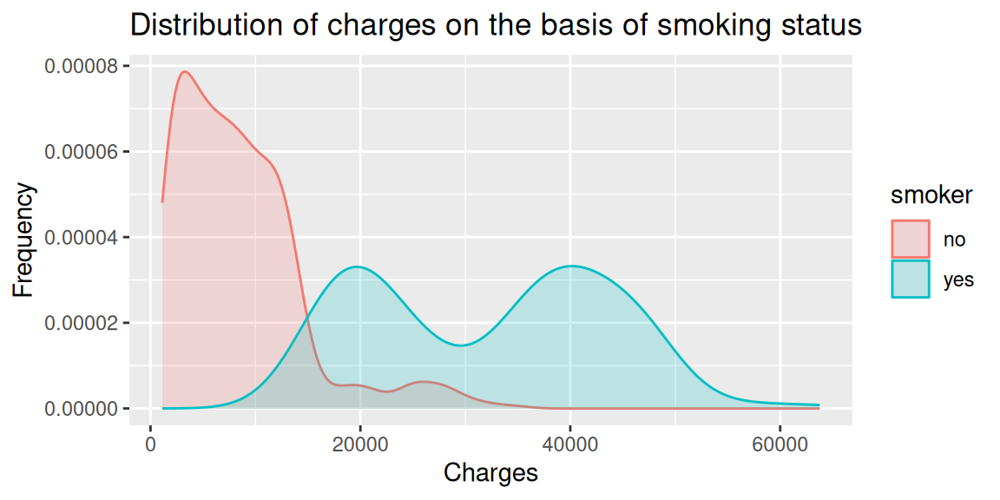
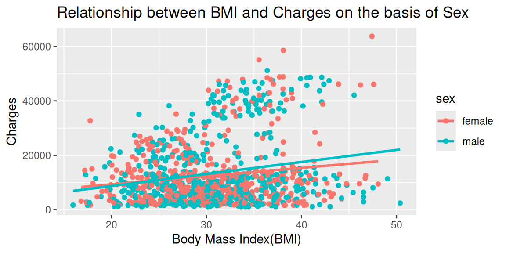

| region | Mean_charges | Median_charges | StDev_charges |
|---|---|---|---|
| northeast | 13731.44 | 9875.680 | 11779.33 |
| northwest | 12188.37 | 8930.935 | 10958.23 |
| southeast | 14138.84 | 9001.423 | 13487.14 |
| southwest | 12040.90 | 8802.874 | 11206.23 |
What factors affect Medical Insurance Charges?


When it comes to safety, people have access to medical care and medical insurance is crucial.A medical insurance policy is one that contributes to the cost of the policyholder’s medical expenses. It protects you from unplanned, high medical costs. You pay less for covered in-network medical procedures even before you’ve met your deductible. Medical insurance has associated costs. Due to their high rates, insurance fees may be a burden for some people. The cost of medical insurance varies depending on the person. It might rely on elements including the person’s sex, their current location, and whether or not they practice healthy habits. We can evaluate these relationships through visual graphs.
The average, median, and standard deviation of medical insurance cost for each region are displayed in the first table. The data reveals that, with a mean of 14138.84, a median of 9001.423, and a standard deviation of 13487.14, the southeast area has the highest average charges. The southwest region has the least expensive rates, with an average cost of 12040.90, a median of 8802.874, and a standard deviation of 11206.23. Despite the fact that there are minor discrepancies in the mean charges across all the regions, we do not observe a significant one. Therefore, it appears that regional differences in medical insurance costs are minimal.
The first graph depicts a correlation between medical insurance costs and status of cigarette smoking. We can see that nonsmokers have charges that are less in number, with the majority of the population having charges between zero and about twenty thousand. Contrarily, it is clear that smokers pay higher medical insurance fees, ranging from about 10,000 to about 60,000. This demonstrates that smokers pay more for insurance than nonsmokers do. The association between insurance costs, Body Mass Index, and Sex is shown in the second graph. People’s body mass indices differ depending on their sex, and often women have greater BMIs than men. Although there is a tiny difference between insurance costs for men and women, it is not extremely noticeable. Males pay slightly more for insurance. The majority of the fees are similar when the body mass index rises, however a few charges do likewise increase. We can observe that, despite the fact that there is no appreciable difference, men in the BMI range of approximately 30 to 45 tend to pay greater insurance charges than women.
The study of the data shows an important relationship between smoking behaviors and medical insurance costs, implying greater expenditures for smokers. However, there is no major relationship between insurance costs and variables like sex, BMI, or geographic location. This insight emphasizes how lifestyle decisions, particularly smoking, affect insurance rates. For people to choose their health insurance wisely, they need to understand these tendencies. While highlighting fairness in insurance pricing for other criteria, it emphasizes the necessity for smokers to be aware of the financial repercussions.